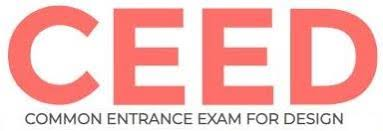

GRE(Graduate Record Examinations)
The Graduate Record Examinations is a standardized test that is an admissions requirement for many graduate schools in the United States and Canada. The GRE is owned and administered by Educational Testing Service. The overall test comes to around 3 hours and 45 minutes so that’s roughly four hours. GRE test-takers will receive 3 separate scores, one for each section. Math and Verbal GRE scores range on a scale of 130–170. Analytical Writing scores range from 0–6.
LOCATION:IIT BOMBAY,V.J.T.I,D.Y.Patil,S.P.I.T
DATE:10/1/2020,22/4/2020,30/7/2020
GATE(Graduate Aptitude Test in Engineering)

The Graduate Aptitude Test in Engineering is an examination that primarily tests the comprehensive understanding of various undergraduate subjects in engineering and science. GATE exam consists of 65 multiple choice and numerical questions over a 3-hour duration. GATE Score is valid for a period of 3 years
LOCATION:IIT BOMBAY,IIT Kharagpur
DATE:15/2/2020,20/3/2020,31/5/2020
CEED(Common Entrance Examination for Design )
The Common Entrance Examination for Design is a joint entrance exam for post-graduate studies in the field of technological design held annually jointly at all IITs and Indian Institute of Science. CEED 2020 Exam Pattern is divided into two parts – Part A and Part B. Part A is an online test which contains multiple choice questions that will include design aptitude questions for evaluating a candidate’s Visualisation and Spatial Ability, Observation and Design Sensitivity, Environmental and Social Awareness, etc. In Part B, questions are displayed on computer screen and answers are to be written on an answer sheet. Questions in Part B are aimed at testing design, drawing and writing skills.
LOCATION:IIT BOMBAY,IIT Kharagpur,IIT Delhi
DATE:3/2/2020,14/6/2020,23/9/2020
TOEFL(Test of English as a Foreign Language)

TOEFL is one of the most popular English proficiency exams accepted at American universities and schools abroad. TOEFL tests the international students’ usage and understanding of English as it is spoken, written and heard in college and university surroundings. The TOEFL test is scored on a scale of 0 to 120 points. Each of the four sections (Reading, Listening, Speaking, and Writing) receives a scaled score from 0 to 30. The scaled scores from the four sections are added together to determine the total score.
LOCATION:Aruna Manharlal Shah Institute Of Management,MIT College Of Engineering,Vishwakarma Institute of Technology
DATE:13/1/2020,25/2/2020,18/3/2020,21/4/2020
CAT(Common Admission Test)
The Common Admission Test is a computer based test for admission in a graduate management program. CAT exam is conducted online once every year. The exam is held in two sessions - forenoon and afternoon. The forenoon session is held from 9 am to 12 pm and the afternoon session is held between 2 pm and 5 pm. CAT syllabus includes three sections: Verbal Ability & Reading Comprehension (VARC) Data Interpretation & Logical Reasoning (DILR) Quantitative Ability (QA)